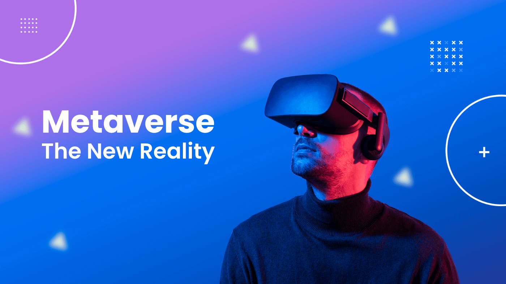

- What are Metaverse and Digital marketing?
- Two tailwinds for Metaverse Digital Marketing
- Real-world sample
- Future Application
- Threat
- Conclusion
In 2021, Facebook officially changed its name to Meta, which makes the metaverse become one of the most popular buzzwords nowadays. What is the metaverse, and how will it revolutionise digital marketing? How do companies utilise the metaverse to get more benefits? This blog will briefly answer these questions for you.
What are Metaverse and Digital marketing?
Briefly, the metaverse is a virtual world that can give people a sense of immersion via high technology such as virtual reality and augmented reality. Digital marketing refers to using online platforms to boost sales, increase brand equity, and so on. It includes Search Engine Optimisation (SEO), Search Engine Marketing (SEM), Social Media, Email etc.
Two tailwinds for Metaverse Digital Marketing
There were two factors that boosted the development of metaverse digital marketing, and COVID-19 was one of them. The pandemic caused every country to begin blocking its national boundaries, and a series of measures were implemented to prevent the spread of cases, including commercial trading restrictions and stay-at-home orders. Such restrictions have significantly affected people's lifestyles and consumption habits and have led to an increase in screen time, which has considerably amplified the influence of digital marketing. Based on the data from Statista, global retail e-commerce sales have risen to approximately US$4.9 trillion in 2021.
Another factor is the rapidly growing information technology nowadays, the soaring computing power and web3 enabling the realisation of the metaverse. The 5G technology and other network infrastructures (such as the installation of numerous base stations) facilitate digital marketing tremendously. With the widespread availability of mobile devices, companies are able to reach customers in more ways with various channels. Moreover, improvements in technology have enabled advanced VR and AR facilities, the evolution of wearable devices making it easier for customers to get an immersive feel - which is what the metaverse sought.

Real-world sample
There are many forward-looking companies that have started their own metaverse digital marketing, and Gucci is a good case. Gucci has partnered with 10KFT to mint their own NFT (non-fungible token) on the Ethereum blockchain. Their NTF project, Gucci Grail, includes a virtual floating "New Tokyo" world, and fashion accessories for purchases by profile picture NFT owners and a fictional character named Wagmi-San. Besides, Gucci has recently partnered with animated toy start-up Superplastic to launch a series of 'SuperGucci' NFTs, and those who already own Superplastic's first NFTs can purchase SuperGucci NFTs in advance. Moreover, Gucci has also purchased and is currently developing a virtual real estate in The Sandbox.
Gucci's series of metaverse projects successfully matched their target customers who could bring them high profits - the avant-garde fashion trendsetters. The clothing industry was hit hard as the frequency of people going out during the pandemic plummeted. However, the digital campaign launched by Gucci successfully created a new sales area for them and made up for part of the losses. More importantly, at the same time, Gucci has maintained public exposure on social media (an important part of digital marketing), and metaverse technology allowing customers to still get the virtual reality experience of buying Gucci. Such a campaign uplifts Gucci's brand positioning, increasing brand equity and laying the root for future brand metaverse marketing battles.
Another good case in point is IKEA, which has a more practical application of metaverse technology compared to Gucci. IKEA is committed to applying AR and VR to real-life purchasing scenarios for its customers, and its recently launched Kreativ Scene Scanner allows customers to remove their real furniture from an AR replica of a room. Additionally, IKEA has launched 50 3D showrooms that enable consumers to virtually read its catalogue and try out featured products in their AR-simulated rooms.

Future Application
There are two main approaches to metaverse digital marketing in the future, one is to collaborate with other metaverse platforms, offering sponsorship and marketing in their metaverse. The other is for brands to build up a metaverse themselves and attract customers to their own metaverse and marketing.
- Cooperate with others platform, sponsorship
- Game
- Social media
- Build own platform
- Manufactory virtual tour, involve the consumer, customizing
- Collection game, consumer loyalty program plus
Threat
- Privacy policy
- Monetary regulation
Conclusion
- J